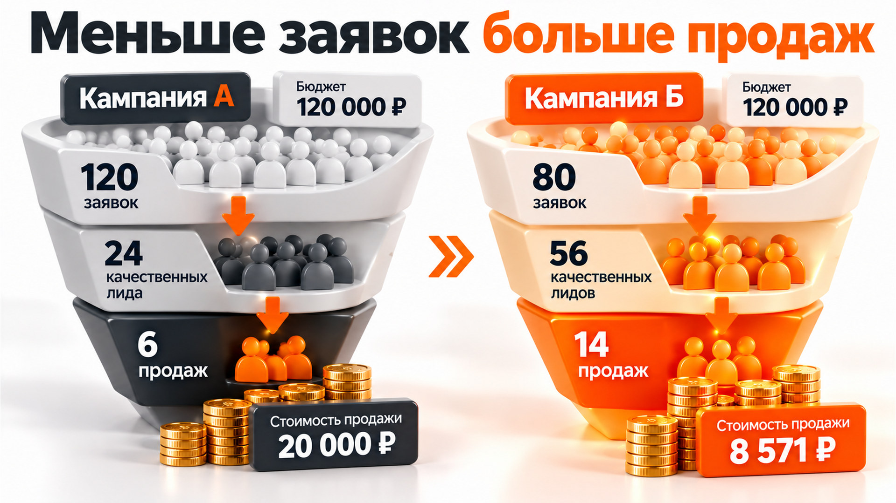

Блог о платном трафике
Как оценить эффективность Яндекс Директа
Эффективность Яндекс Директа нельзя оценивать только по CTR, стоимости клика или количеству заявок. Реклама работает хорошо, когда она приводит нужный бизнесу объём клиентов по стоимости, которая укладывается в экономику проекта.
Главный критерий эффективности Яндекс Директа: рекламные расходы должны оправдываться результатом в виде качественных обращений, продаж и прибыли. Остальные показатели помогают понять, за счёт чего получен результат и где возникают проблемы.
Как проверить эффективность Яндекс Директа: короткий алгоритм
Чтобы понять, насколько хорошо работает реклама, я рекомендую последовательно ответить на пять вопросов:
- Сколько бизнес может платить за клиента? Определите допустимую стоимость привлечения с учётом экономики продукта.
- Сколько клиентов приносит реклама? Посчитайте не только заявки, но и квалифицированные обращения и продажи.
- Окупается ли реклама? Сопоставьте расходы с выручкой, маржинальным доходом и прибылью.
- Где теряются потенциальные клиенты? Проверьте конверсию сайта, качество заявок и работу отдела продаж.
- Какие кампании дают лучший результат? Сравните стоимость клиента, доход и качество обращений по рекламным кампаниям.
Если данные о продажах пока недоступны, временно ориентируйтесь на стоимость квалифицированного лида и его долю среди всех обращений.
Но важно понимать: это промежуточная оценка, а не доказательство окупаемости рекламы.
Какие показатели эффективности Яндекс Директа нужно отслеживать
Я обычно оцениваю рекламные кампании в обратном порядке относительно того, как пользователь проходит воронку: сначала результаты бизнеса, затем продажи, заявки и только после этого характеристики трафика.
| Показатель | Что показывает | Для чего нужен |
|---|---|---|
| Прибыль | Финансовый результат после расходов | Оценка выгоды для бизнеса |
| ROI / ROMI | Отдачу от вложенных средств | Оценка окупаемости |
| ДРР | Долю рекламных расходов в выручке | Контроль рекламной экономики |
| ROAS | Выручку относительно затрат на рекламу | Сравнение доходности рекламных кампаний |
| CPS / CPO | Стоимость продажи или заказа | Оценка привлечения покупателей |
| CPL / CPA | Стоимость заявки или целевого действия | Контроль затрат на обращения |
| CR | Конверсию посетителей в заявки или покупки | Диагностика сайта и трафика |
| CPC / CTR | Стоимость клика и кликабельность | Диагностика рекламных объявлений |
Не каждому бизнесу нужны все показатели одновременно.
Для интернет-магазина основными могут быть ДРР, ROAS, стоимость заказа и маржинальный доход. Для услуг и B2B часто важнее стоимость квалифицированного лида, стоимость привлечения клиента и количество заключённых сделок.
Чем ближе показатель к реальным деньгам бизнеса, тем больше его значение для итоговой оценки рекламы.
Например, высокий CTR не компенсирует отсутствие продаж. Низкий CPC бесполезен, если посетители не оставляют заявок. А хороший CPL ещё не означает, что реклама приводит платежеспособных клиентов.
Сначала рассчитайте допустимую стоимость привлечения клиента
Нельзя определить, хорошо или плохо работает реклама, если неизвестно, сколько бизнес может позволить себе платить за результат.
Допустим, компания готова потратить на привлечение нового клиента не более 20 000 ₽.
При этом из четырёх квалифицированных лидов в продажу превращается один. Конверсия квалифицированных обращений в покупку составляет 25%.
Допустимая стоимость квалифицированного лида:
20 000 × 25% = 5000 ₽
Получается:
- При стоимости качественного лида 3000 ₽ у бизнеса остаётся запас по допустимым расходам.
- При стоимости 5000 ₽ реклама работает на установленной границе.
- При стоимости 8000 ₽ экономика привлечения уже не соответствует плану.
При этом речь именно о квалифицированных обращениях. Если среди обычных заявок много нецелевых, допустимый CPL будет ниже.
Поэтому универсального ответа на вопрос «какой CPL считается хорошим в Яндекс Директе» не существует.
Как спрогнозировать бюджет Яндекс Директа и стоимость заявок
Пример расчёта эффективности Яндекс Директа: от расходов до прибыли
Рассмотрим условный проект, который за месяц потратил на рекламу 120 000 ₽.
| Показатель | Результат |
|---|---|
| Расходы на рекламу | 120 000 ₽ |
| Клики | 3000 |
| Полученные заявки | 120 |
| Квалифицированные заявки | 60 |
| Продажи | 12 |
| Средний чек | 50 000 ₽ |
| Выручка с рекламы | 600 000 ₽ |
| Переменные расходы на выполненные заказы | 360 000 ₽ |
| Маржинальный доход до рекламы | 240 000 ₽ |
Для упрощения примера считаем, что 3000 рекламных кликов дали 3000 визитов.
Шаг 1. Рассчитываем стоимость заявки
CPL = рекламные расходы / количество заявок.
120 000 / 120 = 1000 ₽
Конверсия визитов в заявки:
120 / 3000 × 100% = 4%
Шаг 2. Рассчитываем стоимость качественного обращения
Из 120 заявок требованиям бизнеса соответствовали только 60.
120 000 / 60 = 2000 ₽
Получается, реальная стоимость потенциального клиента вдвое выше обычного CPL.
Шаг 3. Считаем стоимость продажи
Из 60 квалифицированных обращений состоялось 12 продаж.
120 000 / 12 = 10 000 ₽ за продажу
Конверсия квалифицированных лидов в продажу составляет 20%.
Именно стоимость продажи уже можно сопоставлять с экономикой бизнеса.
Шаг 4. Рассчитываем ДРР и ROAS
Доля рекламных расходов:
ДРР = расходы на рекламу / выручка × 100%
120 000 / 600 000 × 100% = 20%
Окупаемость рекламных расходов по выручке:
ROAS = выручка / расходы на рекламу × 100%
600 000 / 120 000 × 100% = 500%
Каждый рубль рекламных расходов принёс пять рублей выручки.
Но это ещё не означает пять рублей прибыли.
Шаг 5. Проверяем финансовый результат
Из 600 000 ₽ выручки бизнес потратил 360 000 ₽ на переменные расходы, связанные с выполнением заказов.
Остаётся 240 000 ₽ маржинального дохода до учёта рекламы.
После вычета 120 000 ₽ рекламных расходов:
240 000 − 120 000 = 120 000 ₽
Это положительный результат после переменных и рекламных расходов, но ещё не чистая прибыль компании. Из него могут потребоваться выплаты на аренду, зарплаты, налоги и другие постоянные расходы.
Для оценки отдачи именно от рекламного бюджета можно рассчитать упрощённый ROMI:
(240 000 − 120 000) / 120 000 × 100% = 100%
Такой расчёт имеет смысл, только если правильно определены доходы, переменные расходы и рекламный бюджет.
Почему ROAS 500% не гарантирует прибыль
Предположим, у другого бизнеса те же расходы и выручка:
- Реклама: 120 000 ₽.
- Выручка: 600 000 ₽.
- ROAS: 500%.
- Маржинальность до рекламных расходов: 15%.
Маржинальный доход составит 90 000 ₽.
После вычета рекламных расходов получится убыток 30 000 ₽, ещё до постоянных расходов.
Получается, две компании с одинаковым ROAS могут иметь совершенно разную финансовую эффективность.
Экспертный вывод: оценивать окупаемость рекламы необходимо с учётом маржинальности, а не только выручки. Высокий ROAS сам по себе не является доказательством прибыльности.
CPL и CPA показывают стоимость результата, но не его качество
Для лидогенерации CPL и CPA обычно становятся первыми показателями, которые можно проанализировать после запуска рекламы.
Однако важно различать заявки и реальных потенциальных клиентов.
Допустим, кампания принесла 100 заявок по 1000 ₽. Формально результат выглядит лучше, чем 60 заявок по 1500 ₽.
Но первая кампания может приводить людей, которым не подходят стоимость, регион или условия работы компании.
Во второй обращений меньше, зато большая часть потенциальных клиентов соответствует требованиям бизнеса.
Кроме того, CPA обозначает стоимость выбранного целевого действия. Это необязательно именно заявка. Если в настройках учитывается открытие формы, оформление заказа или другое событие, показатели CPA будут иметь разный смысл.
Поэтому перед сравнением кампаний необходимо убедиться, что в них используется одинаковое определение конверсии.
CPA в Яндекс Директе: формула и расчёт
Почему качество лидов важнее минимального CPL
Я бы обязательно разделял стоимость обычного и квалифицированного обращения.
Стоимость квалифицированного лида = рекламные расходы / количество подходящих обращений.
Для примера сравним две рекламные кампании за одинаковый период.
| Показатель | Кампания А | Кампания Б |
|---|---|---|
| Расход | 120 000 ₽ | 120 000 ₽ |
| Все лиды | 120 | 80 |
| CPL | 1000 ₽ | 1500 ₽ |
| Квалифицированные лиды | 24 | 56 |
| Продажи | 6 | 14 |
| Стоимость продажи | 20 000 ₽ | 8571 ₽ |

Если ориентироваться на CPL, кампания А выглядит эффективнее.
Но кампания Б при том же бюджете привела более чем вдвое больше покупателей.
Её стоимость продажи оказалась значительно ниже, несмотря на более дорогие заявки.
Это важная причина, почему попытка любой ценой снизить CPL способна ухудшить реальный результат.
Как определить квалифицированного лида
Критерии зависят от бизнеса. Например, для B2B-поставщика качественным может считаться обращение от компании, которой нужен конкретный товар в необходимом объёме и подходящем регионе.
Для услуг это может быть клиент, заинтересованный в реальной покупке, понимающий порядок цен и соответствующий географии работы.
При оценке качества обращений отдельно учитывайте:
- Целевые обращения.
- Нецелевые заявки.
- Дубли существующих обращений.
- Автоматический спам и ботов.
Нецелевые обращения и боты представляют собой разные проблемы. Они требуют разных способов диагностики.
При этом качество лида не всегда можно оценить автоматически. Иногда необходимо учитывать содержание разговора и сведения от менеджера.
Почему Яндекс Директ приводит нецелевые заявки
Продажи показывают эффективность точнее, чем заявки
Когда бизнес способен связать рекламное обращение с последующей покупкой, я рекомендую ориентироваться прежде всего на этот результат.
Для этого нужно понимать:
- Сколько заявок поступило с рекламы.
- Сколько обращений оказалось квалифицированными.
- Сколько лидов дошло до сделки.
- Какой доход принесли продажи.
- Сколько стоило привлечение покупателей.
Важно учитывать и различия между самими клиентами.
Две рекламные кампании могут приводить одинаковое количество покупателей, но отличаться средним чеком, маржинальностью заказов и вероятностью повторных покупок.
Поэтому даже одинаковая стоимость продажи не всегда означает одинаковую эффективность для бизнеса.
В проектах с длинным циклом сделки особенно полезна CRM-аналитика. Она позволяет видеть не только отправку формы на сайте, но и дальнейшие этапы обработки обращения.
Где посмотреть эффективность Яндекс Директа
Для полноценной оценки я использую три источника данных: Яндекс Директ, Яндекс Метрику и CRM.
1. Яндекс Директ: расходы и результаты кампаний
Откройте раздел «Статистика», затем «Мастер отчётов».
Выберите нужный период, модель атрибуции и цели, затем добавьте показатели:
- Расход.
- Клики и CPC.
- Конверсии.
- CR и CPA.
- Доход и показатели рентабельности, если настроена передача необходимых данных.
Сравните кампании, группы объявлений, условия показа и рекламные площадки.
При этом не ограничивайтесь общей строкой расходов и конверсий. Кампания может выглядеть нормально в целом, но внутри иметь отдельные сегменты с высоким расходом и слабым результатом.
Официальная инструкция Яндекса по Мастеру отчётов
2. Яндекс Метрика: поведение и конверсии
В Метрике полезно проверить отчёты «Директ, сводка», «Директ, площадки» и «Источники, расходы и ROI».
Здесь можно оценивать источники трафика, достижения целей, расходы и конверсионные показатели.
Если на сайте настроена электронная коммерция, сведения о заказах, товарах и доходах доступны в разделе «Электронная коммерция» внутри отчётов.
Для интернет-магазина особенно полезен отчёт «Источники заказов», который помогает связывать заказы и выручку с источниками посещений.
Важно: данные о доходе будут полезны только при корректной настройке передачи реальной стоимости покупок. Условная ценность достижения цели не должна автоматически восприниматься как фактически полученная выручка.
3. CRM: качество лидов и реальные продажи
Метрика показывает действия на сайте, но не всегда знает, чем завершилось общение с клиентом.
Например, человек оставил заявку, менеджер связался с ним через два дня, а оплату компания получила через две недели.
Без CRM рекламный отчёт может учитывать только первоначальное обращение.
Для более точной оценки нужно передавать сведения о квалифицированных лидах, подтверждённых заказах и оплаченных сделках.
Для привязки офлайн-конверсий к посещениям могут использоваться ClientID, YCLID и другие поддерживаемые идентификаторы.
В Метрике откройте раздел «Отчёты», затем «Сквозная аналитика» и «Офлайн-конверсии».
Важно проверить, удалось ли привязать переданные события к исходным визитам. Не каждая загруженная конверсия автоматически становится корректно атрибутированной рекламной продажей.
Документация Яндекса по передаче данных из CRM
Если данных о продажах пока нет
Такая ситуация встречается достаточно часто.
Реклама работает, Метрика учитывает заявки, но информация из отдела продаж недоступна или CRM ещё не интегрирована с рекламной аналитикой.
В этом случае рекомендую временно использовать три показателя:
- Стоимость всех заявок.
- Долю квалифицированных обращений.
- Стоимость квалифицированного лида.
Например, если реклама привела 100 обращений по 1000 ₽, но только 30 заявок оказались целевыми, стоимость квалифицированного лида составит примерно 3333 ₽.
Это значительно полезнее обычного CPL.
Однако без сведений о продажах нельзя достоверно сказать, какая кампания приносит больше прибыли.
Как только появится техническая возможность, стоит организовать передачу квалифицированных лидов и сделок в аналитику.
Как понять по показателям, почему реклама работает плохо
При анализе важно искать не просто показатель, который ухудшился, а причину его изменения.
| Проблема | Возможная причина | Что проверить и сделать |
|---|---|---|
| Много кликов, мало заявок | Нецелевой трафик, слабый сайт, проблема с формой | Проверить запросы, площадки, посадочные страницы и работу форм |
| CPL низкий, но лиды плохие | Реклама привлекает неподходящую аудиторию | Проанализировать квалификацию лидов по кампаниям и условиям показа |
| CPL вырос, CPC не изменился | Снизилась конверсия в заявку | Проверить сайт, предложение, структуру трафика и технические ошибки |
| CPL вырос вместе с CPC | Увеличилась стоимость трафика | Проверить аукцион, ставки, конкуренцию и изменение структуры кликов |
| Качественные лиды есть, продаж мало | Проблемы с обработкой, ценой или предложением | Проверить CRM, скорость ответа, причины отказов и работу менеджеров |
| Продажи есть, но реклама убыточна | Высокая стоимость клиента или низкая маржа | Пересчитать CPS, ДРР и экономику отдельных продуктов |
| ROAS снизился | Изменились расходы, выручка или средний чек | Сравнить заказы, возвраты, товарную структуру и затраты |
| Конверсии резко исчезли | Сбой аналитики или проблемы с сайтом | Проверить цели, формы, звонки, передачу данных и реальные обращения |
Почему стоимость заявки может расти
На стоимость лида влияют как минимум два показателя: стоимость привлечения трафика и конверсия этого трафика в обращение.
Для приблизительного расчёта при оплате за клики:
CPL = CPC / CR
Здесь CR необходимо использовать в виде доли, а не процентов. Например, при CPC 40 ₽ и конверсии 4%:
40 / 0,04 = 1000 ₽.
Если CPC вырастет до 60 ₽ при прежней конверсии, CPL увеличится до 1500 ₽.
Если CPC останется 40 ₽, но конверсия снизится до 2%, CPL вырастет до 2000 ₽.
В первом случае стоит искать причины изменения стоимости трафика. Во втором проверять трафик, посадочную страницу, предложение и техническую исправность сайта.
Это простое разделение помогает избежать ситуации, когда рекламную кампанию начинают перестраивать из-за проблемы, которая возникла на сайте.
Как провести аудит рекламных кампаний Яндекс Директа
CTR и CPC нужны для диагностики, а не для окончательной оценки
CTR и CPC полезны, но находятся слишком далеко от финансового результата.
Высокий CTR означает, что объявление получает относительно много кликов по сравнению с количеством показов. Но сам по себе он не говорит о качестве этих кликов.
Низкий CPC тоже не гарантирует эффективность. Иногда дешёвый трафик приводит посетителей, которые не собираются покупать.
Бывает и обратная ситуация: дорогие клики дают хорошие продажи, поскольку объявления показываются аудитории с выраженным намерением купить.
Поэтому я рассматриваю CTR и CPC как диагностические показатели.
Какой CTR считается хорошим в Яндекс Директе
От чего зависит цена клика в Яндекс Директе
За какой период оценивать эффективность рекламы
Универсального периода оценки не существует.
Принимать решения нужно после накопления достаточного количества данных и с учётом длительности цикла сделки.
Для интернет-магазина с десятками заказов ежедневно результаты могут накапливаться достаточно быстро.
Для B2B-компании, строительства или дорогостоящих услуг между кликом и оплатой могут проходить недели и даже месяцы.
Поэтому я рекомендую разделять оперативный и итоговый анализ.
Оперативный анализ: отслеживать расход бюджета, работоспособность сайта, поступление обращений, очевидные проблемы с качеством трафика и аномалии.
Итоговый анализ: оценивать квалифицированные лиды, продажи, выручку и окупаемость после того, как соответствующие данные успели накопиться.
Не стоит делать окончательные выводы по одному или двум дням, особенно если кампания получает небольшое количество конверсий.
Учитывайте задержку между кликом и продажей
Если человек перешёл по рекламе в начале месяца, а купил через три недели, его продажа может появиться в аналитике значительно позже первоначального клика.
При оценке длинных сделок полезно анализировать группы обращений по дате их получения и отслеживать, какая доля этих лидов впоследствии превратилась в продажи.
Так можно не путать отсутствие продаж с ситуацией, когда клиенты ещё находятся в процессе принятия решения.
Проверяйте модель атрибуции
Модель атрибуции определяет, как система связывает конверсию с источником трафика.
Например, человек мог сначала перейти по рекламе, затем вернуться на сайт из другого источника и только после этого оставить заявку.
В зависимости от модели атрибуции одна и та же конверсия может по-разному учитываться при оценке рекламных кампаний.
Поэтому при сравнении результатов используйте сопоставимые модели атрибуции и одинаковые определения целей.
В Яндекс Метрике и Директе в 2026 году изменился набор доступных моделей атрибуции, поэтому старые инструкции с названиями отключённых моделей могут быть неактуальны.
Актуальные модели атрибуции Яндекс Метрики
Не смешивайте разные определения рекламных расходов
При расчёте окупаемости важно, чтобы расходы учитывались на одинаковой основе.
Например, в отчётах Метрики рекламные расходы по Директу отображаются без НДС. Если в собственных расчётах вы используете сумму фактических платежей с НДС, результаты могут отличаться.
Также необходимо заранее решить, включаются ли в расчёт расходы на агентство, производство рекламных материалов и другие затраты.
Иначе можно получить разные значения рентабельности для одной и той же кампании.
Пять ошибок при оценке эффективности Яндекс Директа
1. Считать все заявки одинаково полезными. Спам, нецелевые обращения и реальные потенциальные клиенты не должны восприниматься как равнозначный результат.
2. Ориентироваться только на CPL. Дешёвые обращения могут приводить к более дорогим продажам.
3. Путать выручку с прибылью. ROAS 500% не гарантирует, что после выполнения заказов и оплаты рекламы у компании останутся деньги.
4. Не учитывать задержку продаж. Особенно важно для B2B и дорогостоящих услуг, где сделки закрываются не сразу.
5. Сравнивать несопоставимые данные. Разные цели, модели атрибуции, периоды и способы расчёта расходов способны существенно исказить выводы.
Частые вопросы об эффективности Яндекс Директа
Как понять, что Яндекс Директ работает эффективно?
Реклама эффективна, если приводит необходимое количество целевых обращений и продаж по стоимости, которая укладывается в экономику бизнеса. Для окончательной оценки нужно сопоставлять рекламные расходы с финансовым результатом, а не только с количеством конверсий.
Какой CPL считается хорошим в Яндекс Директе?
Универсального значения нет. Допустимый CPL зависит от маржинальности продукта, конверсии обращений в продажи и стоимости привлечения клиента, которую может позволить себе бизнес.
Что важнее: CPL или стоимость продажи?
Стоимость продажи ближе к реальному результату бизнеса. CPL полезен для оперативной диагностики, но без учёта качества обращений может давать ошибочное представление об эффективности.
Какой ROAS считается хорошим?
ROAS необходимо сопоставлять с маржинальностью. Например, при маржинальности до рекламы 30% ROAS 300% означает, что рекламные расходы составляют примерно треть выручки, то есть уже превышают доступный маржинальный доход. Поэтому универсального хорошего ROAS не существует.
Можно ли оценивать Яндекс Директ без CRM?
Можно оценивать расходы, клики, конверсии сайта, стоимость заявок и часть сведений о качестве обращений. Но без достоверных данных о продажах и доходах полноценный расчёт эффективности будет ограничен.
Почему заявок много, а реклама не окупается?
Возможные причины: низкое качество лидов, слабая конверсия обращений в продажи, маленький средний чек, недостаточная маржинальность или высокая стоимость привлечения клиента. Причину нужно искать на соответствующем этапе воронки.
Вывод: как определить, хорошо или плохо работает Яндекс Директ
Яндекс Директ работает эффективно, когда реклама стабильно приводит нужный бизнесу объём клиентов, а стоимость их привлечения позволяет получать положительный финансовый результат.
Для этого необходимо последовательно анализировать всю воронку:
Проверяйте расходы, трафик, заявки, квалифицированные лиды, продажи, выручку и прибыль.
При этом для диагностики полезно двигаться в обратную сторону: от финансового результата к причинам, которые на него повлияли.
За годы работы с Яндекс Директом я не раз сталкивался с ситуациями, когда кампания с красивыми показателями в рекламном кабинете оказывалась слабой по продажам. И наоборот, более дорогие заявки могли приносить бизнесу лучший результат.
Поэтому я не рекомендую искать один универсальный показатель эффективности.
Главное - понимать, во сколько обходится реальный клиент, сколько денег он приносит и какие изменения в рекламе действительно улучшают экономику бизнеса.
Автор: Максим Мирошников, специалист по Яндекс Директу и платному трафику с опытом более 10 лет.